Where does a state space model do the "match-and-copy" computation that transformers do with attention heads?
Mamba-1's attention-free induction mechanism localizes to a single 16-dimensional slice (the C matrix of the selective-scan parameters) at layer 30. Patching it destroys
80% of induction signal
vs. Pythia-2.8B where the strongest single site reaches only
37% (distributed across ≥4 attention layers)
Mamba-1 concentrates a function that a transformer distributes — in a single 16-d subspace (state-space "readout" C), not in attention Q·K·V dot products.
Induction-pair construction. Synthetic pairs
clean = [prefix 8] P(8) [mid 32] P(8) # pattern P repeats
corrupted = [prefix 8] P(8) [mid 32] P'(8) # second pattern differsFeatures-of-interest. Using the pre-existing Mamba-1 L32 SAE (TopK, K=64, 40,960 features), score every feature by (clean − corrupted) activation at the induction positions; take top-10.
Patching sweep. For every (layer, submodule), capture the submodule's activation on the corrupted run, patch into the clean run, measure patch_damage = 1 − (patched − corrupted) / (clean − corrupted). 1.0 = this submodule fully carries the induction signal.
Position-specific variant. Patch only at induction-pattern positions (48-55), or only at pre-induction positions (0-47), to separate "specifically induction" from "generic context."
Bug that mattered. HF's default MambaMixer.forward dispatches to cuda_kernels_forward, which calls causal_conv1d_fn(x, self.conv1d.weight, ...) directly — forward hooks on the Conv1d module never fire. Added force_slow_forward() helper (src/mamba_internals.py) that replaces each mixer's forward with slow_forward, which calls self.conv1d(x) and triggers hooks correctly.
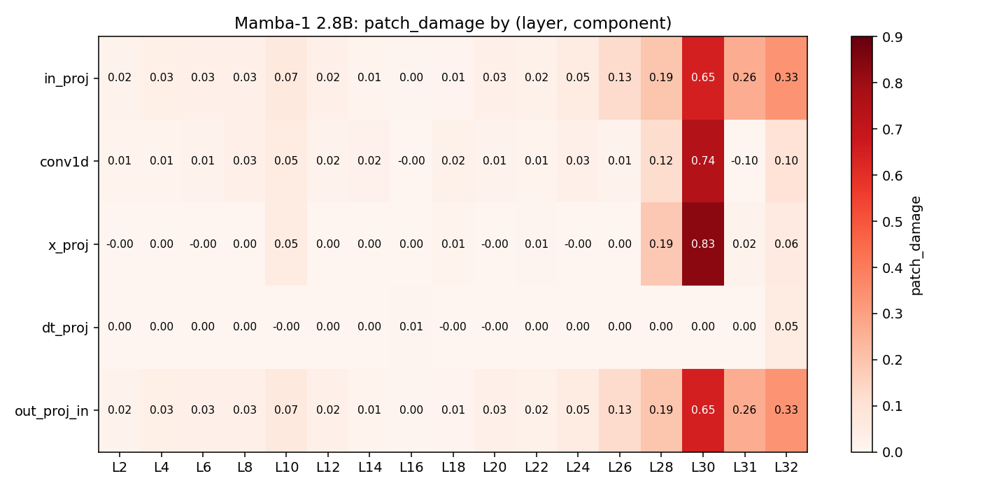
L30 x_proj = 0.833. dt_proj is essentially zero everywhere — the time-step Δ is not where induction lives.Top sites:
| Layer | Submodule | patch_damage |
|---|---|---|
| L30 | x_proj | +0.833 |
| L30 | conv1d | +0.743 |
| L30 | in_proj | +0.648 |
| L30 | out_proj_in | +0.648 |
| L32 | in_proj | +0.333 |
| L32 | out_proj_in | +0.333 |
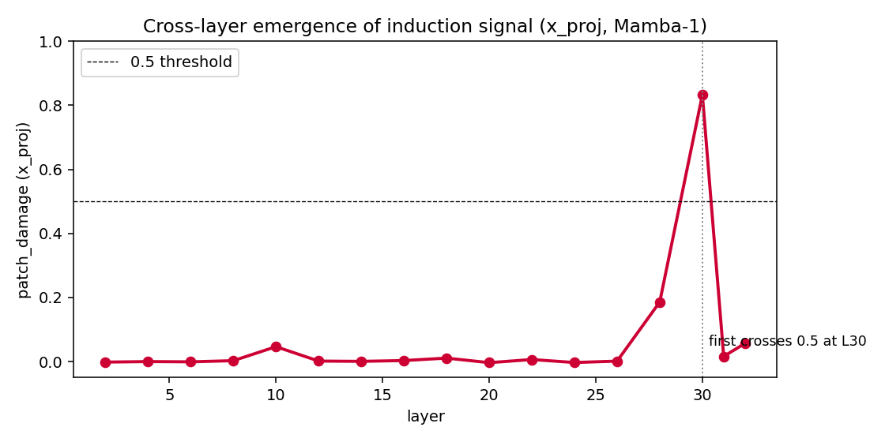
x_proj patch_damage by layer. Essentially 0 through layer 26 (slight bump at L10 = 0.047), a jump to 0.19 at L28, then 0.83 at L30 — the induction computation emerges sharply between L28 and L30, then layer 31/32's x_proj contribute ≤ 0.06.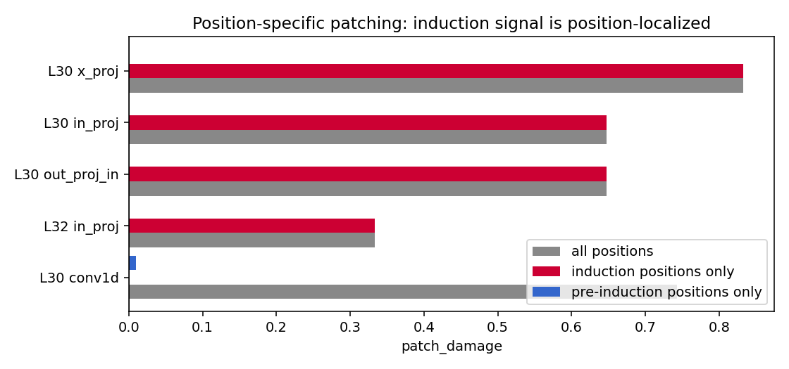
x_proj, in_proj, and out_proj_in. Restricting to pre-induction positions gives 0.00 for these three. conv1d is the exception: all=0.74, ind_only=0.00 — it carries short-range context, not induction-specific signal.C — a 16-dimensional sliceMamba-1's x_proj is a Linear(d_inner=5120 → 192) that produces the selective-scan parameters:
time_step (Δ_pre): 160 dims — fed to dt_proj → discrete time-step ΔB: 16 dims — state-space "input" matrix (how tokens write to state)C: 16 dims — state-space "output" matrix (how state reads out to residual)Patching each slice individually at L30:
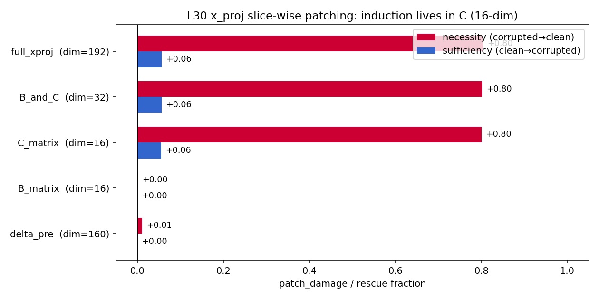
C (16-dim, 0.80 damage = 99.6% of the full-x_proj effect). B and Δ carry essentially none.Interpretation. Selective scan runs h_{t+1} = A(Δ) · h_t + B · x_t then y_t = C · h_t. Induction requires reading the state, not writing to it — so the "match found" signal is encoded in C. Earlier layers accumulate pattern memory into the state; at L30, C selectively reads out the matching component.
The sufficiency direction tells a complementary story: patching clean C into an otherwise-corrupted run rescues only 5.6% of induction. L30's C is necessary (patching it destroys induction) but not sufficient (putting it back alone doesn't restore it). Induction requires both (i) the correct C readout AND (ii) the state built by layers 0–29 from the clean sequence.
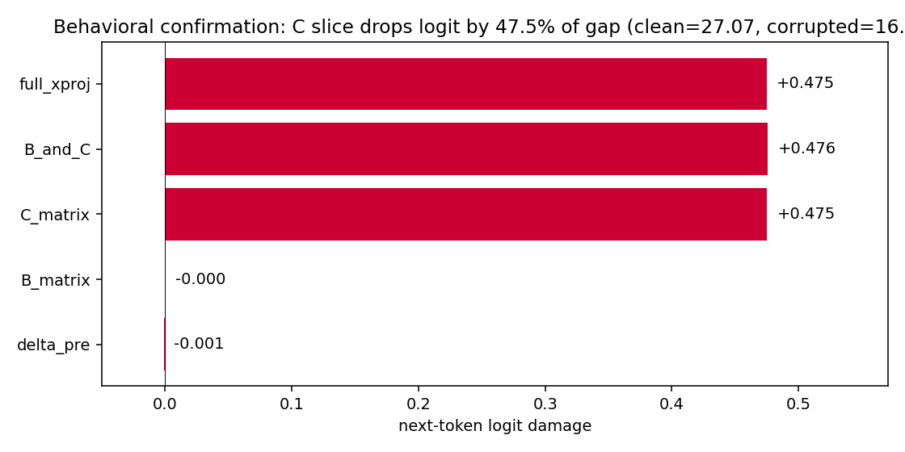
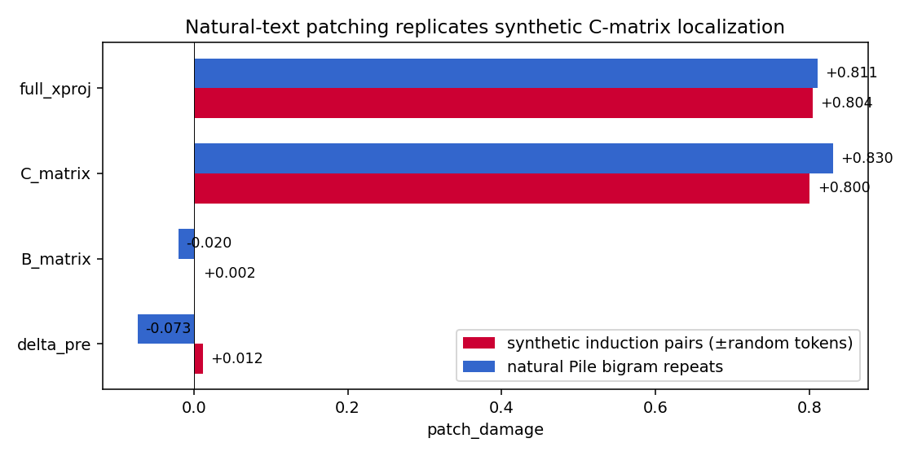
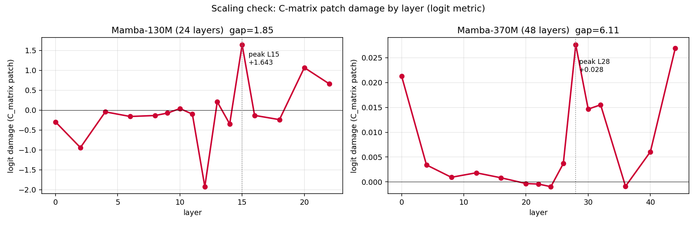
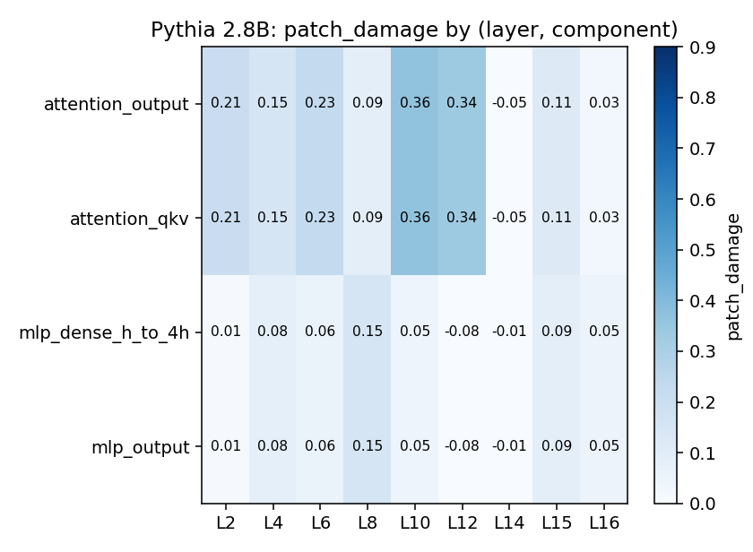
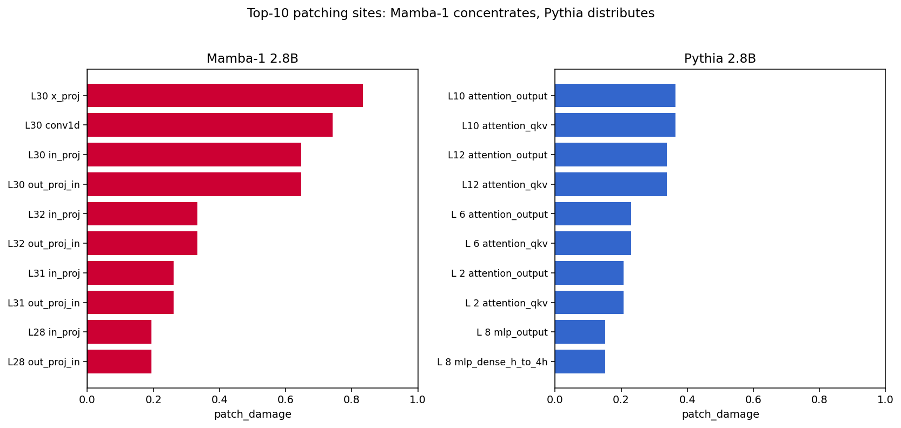
Mamba-2 replaces selective scan with state-space duality (SSD) and merges all projections into a single in_proj that outputs [z, x, B, C, dt] (10,576 channels). We ran the analog of Phase B using the freshly-retrained Mamba-2 L32 SAE (see main report for the hook-fix that makes Mamba-2 SAE numbers comparable).
| baseline act | corrupted act | gap | |
|---|---|---|---|
| Mamba-1 (L32 SAE, plen=8) | 3.33 | 0.10 | 3.23 |
| Mamba-2 (L32 SAE, plen=8) | 0.47 | 0.25 | 0.22 |
Pattern-length sweep on Mamba-2: gap grows from 0.16 (plen=4) to 0.27 (plen=32) but never approaches Mamba-1's 3.23. The weak signal isn't an artifact of short patterns.
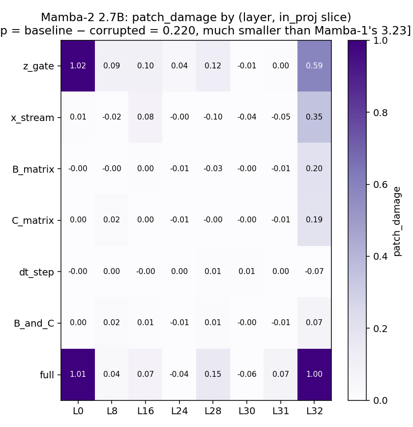
in_proj slice-level patching. Signal at L32 spreads roughly evenly across z_gate (0.59), x_stream (0.35), B (0.20), C (0.19). The clean "induction lives in C" concentration that characterizes Mamba-1 is absent. L0 values >1.0 are artifacts of the small gap (0.22) combined with L0 patching trivially swapping token info; genuine signal is at L28-L32.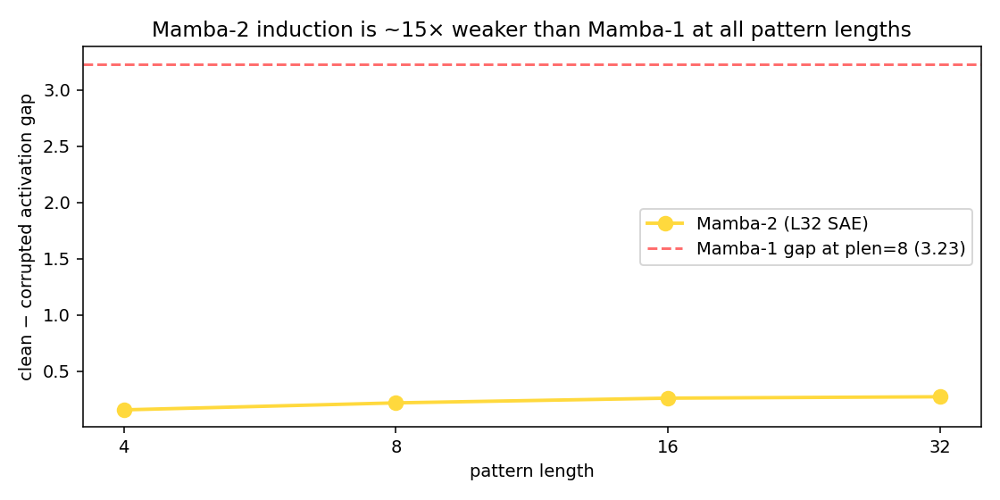
Interpretation. The L30 x_proj.C localization is specific to selective scan, not to SSMs in general. Mamba-2's SSD, with its merged projections and smaller per-group d_state, distributes pattern-matching differently — consistent with external observations that SSD underperforms selective scan on in-context tasks at matched scale.
Patch clean → clean at each top site. If the pipeline is numerically correct, patch_damage must be 0. Result:
| Site | patch_damage (clean→clean) |
|---|---|
| L30 x_proj | 0.0000 |
| L30 conv1d | 0.0000 |
| L30 in_proj | 0.0000 |
| L32 in_proj | 0.0000 |
Random-feature baseline activation on induction pairs: 0.005 (noise floor). Induction features: 3.36 (700× larger). Patching affects real signal in induction features; random-feature "damage" is noise amplified by a tiny denominator.
Re-identify induction features with 5 different random seeds (128 pairs each). All 5 seeds yield the identical top-10 feature set. Pairwise Jaccard = 1.0. Feature IDs are not an artifact of the induction-pair sampling.
| pattern length | patch_damage |
|---|---|
| 4 | +0.729 |
| 8 | +0.746 |
| 16 | +0.772 |
Top-10 feature-set Jaccard across lengths: 0.82. Localization is stable; damage actually grows slightly with longer patterns.
Re-run with 5 Mamba-1 L32 SAEs across k ∈ {32, 64, 128} and expansion ∈ {8×, 16×, 32×}. The top-10 feature INDEX set differs almost entirely between SAEs (Jaccard near 0 — each SAE learns a different basis), but the causal locus is invariant:
| SAE config | L30 x_proj damage |
|---|---|
| x16 k32 | +0.835 |
| x16 k64 (canonical) | +0.746 |
| x16 k128 | +0.699 |
| x8 k64 | +0.801 |
| x32 k64 | +0.691 |
All five fall in [0.69, 0.84]. Mechanism > specific feature IDs.
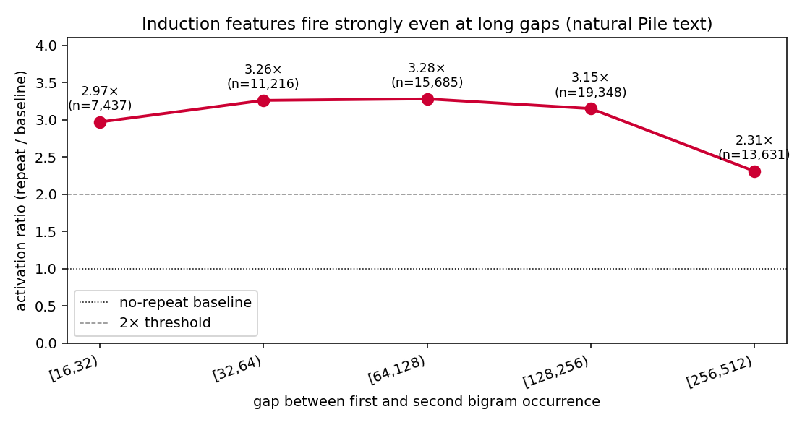
Top activations of induction features in 1,500 Pile documents. Several are textbook induction:
| feat | act | context (arrow = max-activating token) |
|---|---|---|
| 13980 | 6.03 | ...crackdown. "Oh! Thsupra shoes supra shoes, thsupra shoes supra shoes the → [` shoes`] |
| 36829 | 15.11 | ...CT-based cup insertion, and all had postoperative CT. After CT-based cup placement, average → [` cup`] |
| 13980 | 5.68 | ...$1 = foo $2 = bar1 $3 = bar2 $4 → [` bar`] |
| 34338 | 14.72 | ...sales and service for all makes and models of sewing machines and vacuums. Please contact → [`ums`] |
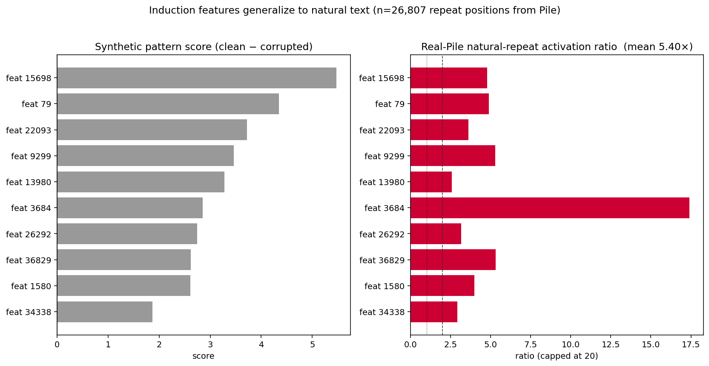
We trained a second TopK SAE inside L30, on the x_proj INPUT activations (d_inner=5120), over 10M Pile tokens (x8 expansion, k=64, 30K steps). Training stats: FVE=0.739, L0=64, dead=1.
Scoring every internal feature by (clean − corrupted) at the induction positions:
| feature | score | clean mean | corrupted mean |
|---|---|---|---|
| 33108 | +8.74 | 8.92 | 0.18 |
| 2230 | +7.65 | 7.65 | 0.0005 |
| 18334 | +6.34 | 6.35 | 0.002 |
| 16064 | +6.32 | 7.05 | 0.73 |
| 5252 | +3.37 | 3.37 | 0.0004 |
| 28090 | +2.34 | 2.70 | 0.36 |
Three features (2230, 18334, 5252) fire at 3–8 activation on clean input and essentially zero (<0.002) on corrupted. Extreme specificity — these are dedicated induction detectors in the pre-x_proj d_inner space.
We also trained an internal SAE at L28 (where the x_proj patch_damage is only 0.19 — beginning of emergence). Same x8, k=64, 30K steps. Comparison:
| L28 | L30 | |
|---|---|---|
| training FVE | 0.722 | 0.739 |
| patch_damage (§1) | +0.19 | +0.83 |
| top-feature score | 6.83 | 8.74 |
| 2nd-feature score | 1.97 | 7.65 |
| mean top-10 score | 1.94 | 4.36 |
At L28 a few features are beginning to fire on matched patterns; by L30 many more are clearly separating clean from corrupted. Top-feature score grows 27%; 2nd through 4th features grow 3–4× (L28: 1.97, 1.76, 1.56; L30: 7.65, 6.34, 6.32). Consistent with the causal picture: induction isn't fully formed at L28; by L30 the mechanism is in place.
y = C·h reads the matched pattern from state.Two SAEs, two different bases at two different sites of the same pipeline, both showing sparse coding of the induction signal.
C selectively reads it out. Δ and B slices carry nothing.Report: report_phase4.md
Result JSONs (all under $SAE_MAMBA_STORAGE/results_phase4/):
induction_features.json — top-10 Mamba-1 induction featurespatching_results.json — 17-layer × 5-component patching sweep (main)patching_position_specific.json — all/ind_only/pre_ind_only decompositionxproj_slice_patching.json — Δ vs B vs C slice necessitysufficiency_patch.json — slice-level sufficiency (rescue)validation.json — null-patch, random-feat, multi-seedreal_text_induction.json — 26,807 natural Pile repeatspattern_length_robustness.json, per_position_patching.jsonmamba2_induction.json, mamba2_plen_sweep.jsonpythia_induction_features.json, pythia_patching_results.jsonCode (all under src/ and scripts/ in the repo):
src/mamba_internals.py — capture/patch context managers + force_slow_forward helperscripts/04_induction_circuit.py, scripts/05_pythia_induction_compare.py — main Phase B/Cscripts/07_extract_xproj.py, scripts/10_train_xproj_sae.py — internal SAE pipelinescripts/09_real_text_induction.py, scripts/11_validate_patching.py — validationsscripts/12_slice_patching.py, scripts/15_sufficiency_patch.py — slice-level necessity / sufficiencyscripts/17_mamba2_induction.py — Mamba-2 SSD adaptation